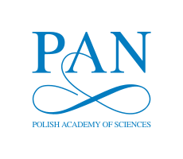
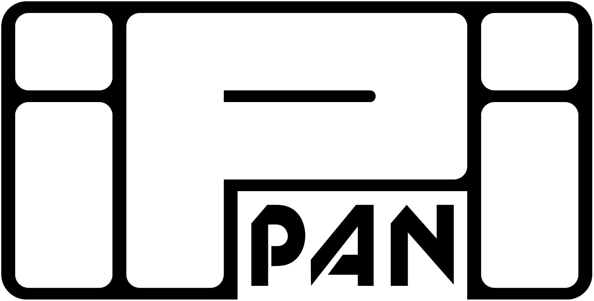

MOST 2026
23 and 30 November 2026
MOST 2026 is a two-day hybrid mini-conference consisting of two independent sessions. It is organized by the Linguistic Engineering Group, Department of Language Modelling at the Institute of Computer Science, Polish Academy of Sciences, with support from MOST PAN.


Day 1, Persuasion in Parliament and Beyond, is devoted to the computational analysis of persuasion political discourse. Day 2, AI without Borders, aims at bringing together Polish AI researchers working all around the globe.
Hybrid: in Warsaw (Jana Kazimierza 5, room 5) and online. Talks will be given in English.
Programme
All times are Warsaw time (CET, UTC+1).
Registration
Please register to attend in Warsaw or online so that we can send you updates.
How to attend
In person: Warsaw, Jana Kazimierza 5, room 5.
Online: Link to the event (opens in new tab)
See also the Natural Language Processing Seminar (opens in new tab) organized by the Linguistic Engineering Group at the Institute of Computer Science, Polish Academy of Sciences.